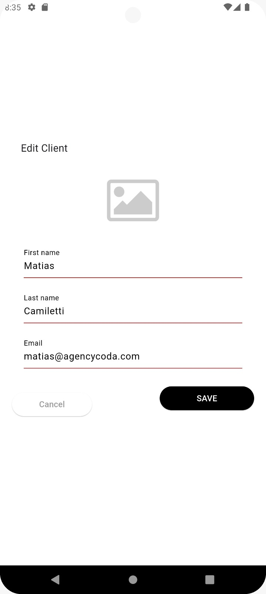
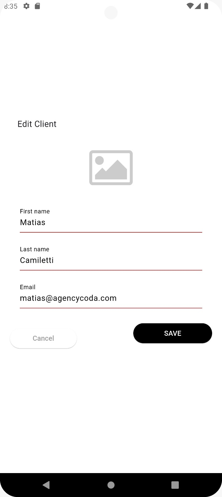
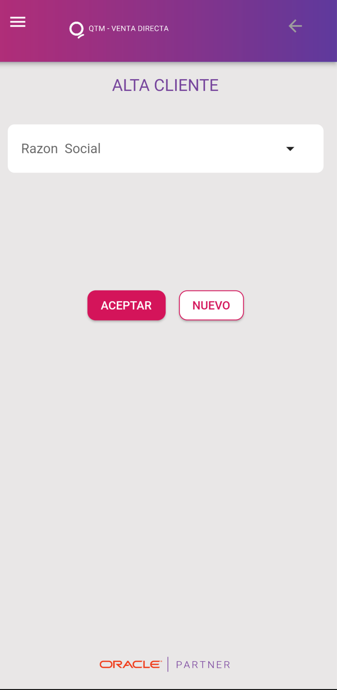
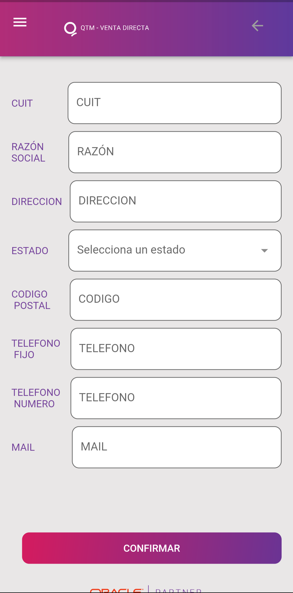
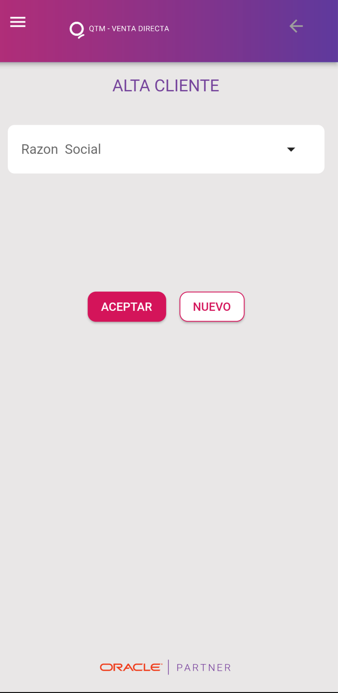
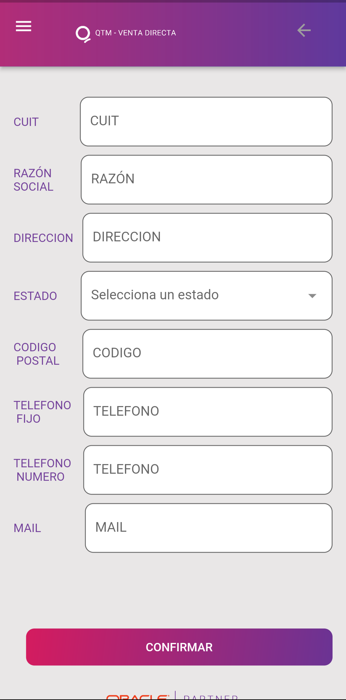

Mi Trabajo
Minimal Tots
Proyecto que me fue asignado y en el cual trabajé recientemente. El objetivo principal era desarrollar una aplicación móvil funcional y eficiente
- DART
Se me solicit√≥ que la aplicaci√≥n incluyera las siguientes caracter√≠sticas clave: üìã Listado de Clientes: Creaci√≥n de un listado dinámico con buscador que mostrara resultados en lotes de 5 clientes. üîÑ ABM de Clientes: Implementaci√≥n de funcionalidades para Alta, Baja y Modificaci√≥n de clientes. üîë Pantalla de Login: Integraci√≥n con una API para obtener el token de autenticaci√≥n necesario para consumir las APIs relacionadas con clientes. üé® Dise√±o en Figma: Implementaci√≥n de pantallas respetando las especificaciones de dise√±o proporcionadas.
üõ†Ô∏è Tecnolog√≠as y Metodolog√≠as Utilizadas: Flutter: Framework principal para el desarrollo multiplataforma. Gestor de Estado BloC: Para manejar la l√≥gica y los estados de la aplicaci√≥n de manera escalable. Inyecci√≥n de Dependencias (Injectable): Facilitando la modularidad y el desacoplamiento. Peticiones HTTP: Comunicaci√≥n eficiente entre la app y el servidor mediante APIs REST. Clean Architecture: Para mantener un c√≥digo limpio, estructurado y fácil de escalar. Patr√≥n MVVM: Separaci√≥n clara entre la interfaz de usuario y la l√≥gica empresarial.


 

Aprobación orden de compra
App para aprobación de requerimientos y órdenes de compra, dónde se podrá aprobar o rechazar órdenes de compra pendientes que tengan su empresa..
- DART
La aplicación actual se desarrolló utilizando FLUTTER para garantizar su adaptabilidad en ambas plataformas, App Store y Play Store. Se integra con servicios de API REST, permitiendo una autenticación eficiente a través de una orquestación de JDE Edwards. Esto nos permite manejar datos en formato JSON que se presentan en la interfaz de usuario, ofreciendo una experiencia más rápida y cómoda directamente desde las aplicaciones móviles.
Esta implementación elimina la necesidad de depender de una computadora para realizar estas acciones, proporcionando mayor agilidad y accesibilidad.
Desafíos y soluciones
Inicié el desafío de desarrollar mi primera aplicación, utilizando solo Postman para visualizar los datos que se implementarían en una app móvil. Al ser autodidacta, encontré soluciones en documentaciones y foros que recomendaban el uso de Android Studio. Con experiencia previa en Java en JDE Edwards, opté por ese lenguaje y practiqué de forma autónoma. Investigué bibliotecas y frameworks para la creación de la aplicación. También superé el desafío de llevar la aplicación a iOS utilizando el framework Flutter, evitando la creación de dos versiones distintas para cada plataforma.


Venta Directa
La aplicación, desarrollada en el versátil framework Dart para asegurar su disponibilidad en múltiples plataformas, se enfoca en ofrecer un conjunto robusto de funcionalidades orientadas principalmente a la gestión de transacciones financieras y la administración de clientes. Entre sus capacidades principales se encuentra la posibilidad de levantar pedidos de venta, registrar cobranzas y mantener actualizados los datos de los clientes. Estas funciones son fundamentales para usuarios y empresas que buscan una solución integral para sus necesidades financieras y de gestión de clientes. La aplicación se distingue por su eficiente integración con múltiples API REST, las cuales permiten acceder a una amplia gama de información relevante, tales como números de identificación fiscal (CUIT), estados de transacciones y detalles de pedidos. Este enfoque proporciona a los usuarios una experiencia fluida y completa al tener acceso a datos actualizados de manera rápida y segura. Además, se ha implementado el uso de Provider, una solución eficaz para el almacenamiento y gestión de datos en modo offline. Esta elección estratégica no solo optimiza el rendimiento de la aplicación al reducir la dependencia de conexiones en línea, sino que también simplifica el proceso de acceso a la información, lo que resulta en una experiencia de usuario más ágil y sin interrupciones. Con estas características, la aplicación se posiciona como una herramienta confiable y completa, ideal para usuarios que buscan gestionar sus operaciones financieras de manera eficiente y segura, y para empresas que desean ofrecer una experiencia bancaria sólida a sus clientes, con la capacidad de consultar y gestionar pedidos pendientes y cobranzas de manera intuitiva y eficaz.
- DART


 



Conteo Cíclico
App para Android que facilita el conteo físico de inventario de forma offline mediante un dispositivo móvil con lector de códigos de barras o un handheld. Una vez completado el conteo, los datos recopilados se envían al servidor AIS de JDE para su ingreso en la plantilla correspondiente..
- JAVA
- XML
La aplicación actual está desarrollada en Java y se integra con servicios de API REST. Facilita una autenticación eficiente mediante la orquestación de JDE Edwards. Utiliza OkHttp para gestionar las comunicaciones HTTP, Retrofit para consumir servicios web RESTful de manera eficiente, y SQLITE para almacenar datos localmente en aplicaciones Android, permitiendo así el uso de la aplicación de manera offline.
Esta aplicación, junto con Procesos Logisticos y Retención de lotes, ha sido diseñada para el uso de empleados que tienen acceso a los pallets y a JDE Edwards. Permite a los usuarios cargar rápidamente la información de los pallets, ya sea utilizando un teléfono celular o un dispositivo handheld, de manera eficiente incluso sin conexión a Internet. Esto significa una notable reducción en la carga de trabajo, eliminando la necesidad de anotar manualmente todos los pallets y luego dedicar tiempo a cargarlos en una computadora posteriormente.


Procesos Logisticos
Se desarrolló en JDE una plataforma para gestionar el control de pallets recolectados mediante una aplicación móvil. La interfaz de la plataforma permite registrar los movimientos logísticos de los pallets, incluyendo entradas desde aduana, salidas, devoluciones y entregas entre plantas. Este sistema proporciona trazabilidad completa de los pallets. Todos los movimientos se someten a un proceso de control que valida la consistencia entre la información recolectada y las transacciones cargadas en JDE.
- JAVA
- XML


Aprobación de mantenimiento
Orientada para el cambio de estado sobre las órdenes de trabajo. Despliega una grilla con todas las órdenes de trabajo generadas por el solicitante en espera de aprobación, pudiendo aprobar o rechazar cada orden desplegada.
- DART
.png)
.png)

.png)
.png)
Clientes

Sobre mi
Soy un apasionado desarrollador de aplicaciones móviles con más de tres años de experiencia en Quantum Consulting, enfocándome tanto en entornos online, como offline, integradas con el servidor AIS del sistema Oracle JD Edwards EO. Durante este tiempo, he trabajado en una variedad de proyectos, desde aplicaciones para la aprobación de órdenes integradas con el Orquestador hasta apps que utilizan bases de datos internas (SQLite) y que se integran a dispositivos Handheld para la lectura de códigos de barras y escaneo de QR. Cabe destacar que para la implementación de estas aplicaciones he usado principalmente Java y diversos frameworks, empleando Retrofit y OkHttp para el manejo eficiente de las solicitudes HTTP. Además, he afrontado y superado el desafío de lanzar con éxito mi primera aplicación en App Store (iOS), donde utilicé Flutter y su lenguaje Dart para el desarrollo demostrando capacidad para adaptarme y mis habilidades técnicas. Supervisé con éxito un equipo multifuncional compuesto por un desarrollador front-end y un diseñador gráfico, liderando la ejecución de proyectos clave. Mi responsabilidad no solo incluía la gestión de tareas diarias, sino también la creación de un entorno colaborativo donde el desarrollador y el diseñador pudieran aprovechar al máximo sus habilidades. Como objetivo profesional busco avanzar hacia el rol de Senior Mobile Developer, aspirando a dominar por completo las diversas plataformas y especializarme en Java, Flutter y Swift. Estoy comprometido a continuar creciendo, aprendiendo y perfeccionando mis habilidades técnicas para contribuir significativamente al desarrollo de aplicaciones innovadoras y de alta calidad.
Mi CV